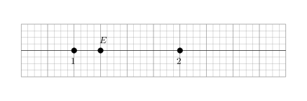
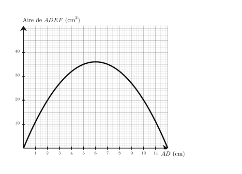
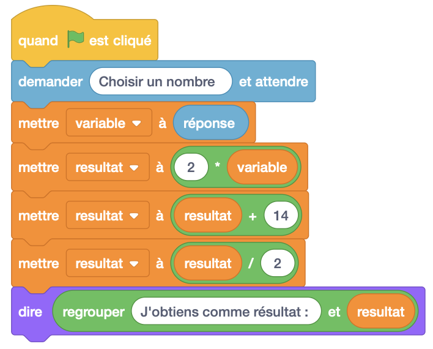

Dans une école de 1500 étudiants, $40\%$ des étudiants aiment la musique pop.
Combien d'étudiants aiment la musique pop ?
Le nombre d'étudiants qui aiment la musique pop est égal à :
$1\,500 \times \dfrac{40}{100} = \dfrac{60\,000}{100}={\color{#8B3C52}\boldsymbol{600}}$.
02
Question
Sur cette droite graduée, quelle est l'abscisse du point $E$ ?
A. $\dfrac{5}{4}$ B. $\dfrac{3}{4}$ C. $2$ D. $1$

On remarque qu'il y a 4 divisions entre $1$ et $2$, donc chaque division vaut $\dfrac{1}{4}$. Le point $E$ est situé après $5$ divisions à partir de l'origine. Donc l'abscisse de $E$ est égale à $\dfrac{5}{4}$. La bonne réponse est la réponse A.
03
Question
Calculer l'aire exacte d'un triangle de base $5\text{ cm}$ et de hauteur $3\text{ cm}$
On choisit un film au hasard parmi ceux à l'affiche proposant $9$ comédies et $81$ drames. Quelle est la probabilité de choisir une comédie ?
Il y a en tout : $9 + 81 = 90$ . La probabilité de choisir une comédie est de ${\color{#8B3C52}\boldsymbol{\dfrac{9}{90}}}$, soit ${\color{#8B3C52}\boldsymbol{\dfrac{1}{10}}}$.
01
Question
Donner l'écriture décimale de $1{,}26 \times 10^{4}$.
L'écriture décimale de $1{,}26 \times 10^{4}$ est ${\color{#8B3C52}\boldsymbol{12\,600}}$.
02
Question
Il est indiqué sur la bouteille de sirop qu'il faut $60$ cL de sirop pour $3$ L d'eau. On veut utiliser $7$ L d'eau. Quel volume de sirop doit-on prévoir ?
Commençons par trouver combien est-ce qu'il faut de sirop pour $1$ L d'eau. 3 L d'eau, c'est ${\color{#C5607A}\boldsymbol{3}}$ fois $1$ L d'eau. Pour $1$ L d'eau, il faut donc ${\color{#C5607A}\boldsymbol{3}}$ fois moins que $60$ cL. $60$ cL $\div {\color{#C5607A}\boldsymbol{3}} = 20$ cL il faut ${\color{#C5607A}\boldsymbol{20}}$ cL de sirop pour $1$ L d'eau. Cherchons maintenant la quantité nécessaire pour $7$ L d'eau. $7$ L d'eau, c'est ${\color{#C5607A}\boldsymbol{7}}$ fois $1$ L d'eau. Il faut donc ${\color{#C5607A}\boldsymbol{7}}$ fois plus de sirop que $20$ cL : ${\color{#C5607A}\boldsymbol{20}}$ cL $\times {\color{#C5607A}\boldsymbol{7}} = 140$ cL il faut prévoir ${\color{#8B3C52}\boldsymbol{140}}$ cL de sirop.
03
Question
Donner le nom de chacun des solides.
Pavé droit.
04
Question
Les notes obtenues par un élève sont : $18{,}5 ; 15{,}5 ; 13{,}5 ; 16{,}5 ; 14{,}5$.
Que vaut la médiane de cette série de notes ?
Rangeons les notes dans l'ordre croissant : $13{,}5 ; 14{,}5 ; 15{,}5 ; 16{,}5 ; 18{,}5$.
Comme il y a 5 notes (nombre impair), la médiane est la note du milieu, c'est-à-dire la 3e note : ${\color{#8B3C52}\boldsymbol{15{,}5}}$.
Sur le graphique ci-dessus, on a représenté la relation entre la longueur $AD$ et l'aire du rectangle $ADEF$. Quelle est l'aire du rectangle $ADEF$ lorsque la longueur $AD$ vaut $11\text{ cm}$ ?

On cherche $Aire_{ADEF}$ lorsque $AD = 11\text{ cm}$. On trouve $Aire_{ADEF}={\color{#8B3C52}\boldsymbol{11}}\text{ cm}^2$.
On considère l'algorithme suivant :
Qu'obtient-on si on choisit $3$ comme nombre de départ ?

Si on choisit $3$ comme nombre de départ, alors variable prend la valeur $3$.
Ensuite, resultat prend la valeur $2 \times 3=6$.
Puis, resultat prend la valeur $6 + 14=20$.
Enfin, resultat prend la valeur $\dfrac{20}{2}=10$.